Acknowledgments
I extend sincere gratitude to my supervisor, Dr. Myo Thida, for her guidance, patience, encouragement, and invaluable feedback throughout this research.
I acknowledge Kaung Min Khant for technical assistance with API integration and code review.
Finally, I thank my family and friends for their support.
List of Tables
- Table 4.1: Country Selection and Market Context
- Table 4.2: Target Roles and Descriptions
- Table 4.3: Taxonomy Alignment Comparison
- Table 4.4: Skill Extraction Method Comparison
- Table 4.5: Gap Analysis Metrics
- Table 5.1: Sample Distribution by Role
- Table 5.2: Universal Foundation Skills
- Table 5.3: Business Development Role Profile (Singapore vs Thailand)
- Table 5.4: Data Analysis/Science Role Profile (Singapore vs Thailand)
- Table 5.5: Digital Marketing Role Profile (Singapore vs Thailand)
- Table 5.6: Product Management Role Profile (Singapore vs Thailand)
- Table 5.7: UI/UX Design Role Profile (Singapore vs Thailand)
- Table 5.8: Coverage Gap Analysis
- Table 5.9: Myanmar Relative Strengths
- Table 5.10: Myanmar Business Development Deep Dive
- Table 6.1: Recommended Curriculum Components by Priority
List of Figures
- Figure 4.1: Raw Data Collection by Role and Country
- Figure 4.2: Data Processing Pipeline
- Figure 5.1: Average Skills per Job by Country
- Figure 5.2: Top 10 Skills by Country
- Figure 5.3: Skill Category Distribution by Country
- Figure 5.4: Role-Specific Skill Profiles (Singapore vs Thailand)
- Figure 5.5: Cross-Market Role Consistency (Cosine Similarity)
- Figure 5.6: Market Similarity Scores
- Figure 5.7: Skill Intensity Comparison by Country
- Figure 5.8: AI/ML Emerging Skills Gap by Country
- Figure 5.9: Taxonomy Alignment Comparison (O*NET vs Singapore Skills Framework)
- Figure 5.10: Top Non-Taxonomy Emerging Skills
List of Abbreviations
|
Abbreviation |
Full Term |
|
AI |
Artificial Intelligence |
|
ASEAN |
Association of Southeast Asian Nations |
|
ESCO |
European Skills, Competences, Qualifications and Occupations |
|
LLM |
Large Language Model |
|
O*NET |
Occupational Information Network |
|
SBTC |
Skill-Biased Technological Change |
|
SSF |
Singapore Skills Framework |
|
WEF |
World Economic Forum |
AI Usage Disclaimer
This research employed AI tools to enhance research efficiency while maintaining academic rigor and researcher accountability:
Skill Extraction: Google Gemini 2.5 Flash was used for automated skill extraction from job advertisements, configured with temperature=0 for deterministic outputs and validated through human review.
Data Processing and Analysis Scripts: Anthropic Claude (Sonnet 3.5 and Opus 4.5) assisted in developing Python scripts for data processing, statistical analysis, and data visualization, with continuous human oversight and code review.
Research Design and Interpretation: The author maintained full responsibility for all research design decisions, theoretical framing, data interpretation, and conclusions. All AI-generated outputs were critically reviewed, validated, and modified by the researcher.
For detailed methodology on AI tool usage, see Section 4.9 (Ethical Considerations).
Abstract
This study examines skill demands across Southeast Asian tech labor markets at varying stages of digital economy maturity. Collecting 3,247 job advertisements from LinkedIn across Singapore (mature), Thailand (emerging), and Myanmar (developing), the research employs LLM-based skill extraction and analyzes a high-confidence filtered sample of 967 job advertisements to compare employer requirements for five digital economy roles: Product Management, UI/UX Design, Data Analysis/Science, Business Development, and Digital Marketing.
Findings reveal high regional consistency (97% similarity between Singapore and Thailand), with Myanmar showing meaningful but lower alignment (84% with Singapore). While core skill demands are fundamentally similar across markets, Myanmar exhibits 20% lower skill intensity per job and significant gaps in emerging AI/ML competencies. The study contributes a validated dual-taxonomy approach combining O*NET and Singapore Skills Framework, demonstrating that regional taxonomies better capture emerging tech roles than legacy international standards. Results inform workforce development initiatives and regional skills recognition frameworks for emerging digital economies.
Keywords: digital economy, skill demands, job advertisements, LLM extraction, Southeast Asia, workforce development, Singapore, Thailand, Myanmar
Chapter 1: Introduction
1.1 Background and Context
Southeast Asia's digital economy reached $218 billion in gross merchandise value in 2023 and is projected to grow to $600 billion by 2030 (Google, Temasek, & Bain, 2023). This positions Southeast Asia as one of the world's most dynamic digital markets, yet the region faces significant workforce development challenges.
The COVID-19 pandemic exacerbated existing labor market pressures. Southeast Asian regional growth decreased by 2.89% during the pandemic (Cambodian Parliamentarians Institute for Asia, 2024), yet the technology sector demonstrated remarkable resilience, with tech recruiting remaining strong (JAC Group, 2024). This divergence highlighted both the strategic importance of the digital economy and the urgent need for workers with appropriate skills.
A significant shift in hiring practices has accompanied these changes. According to LinkedIn's Future of Recruiting report, 74% of Southeast Asian recruiting professionals now prioritize skills-based hiring over credential-based approaches, expected to reach 80% within 18 months (LinkedIn, 2023).
The variation in digital economy maturity creates a complex landscape:
Singapore has established itself as a regional technology hub with comprehensive digital infrastructure, hosting regional headquarters for major tech companies and maintaining well-developed skills frameworks.
Thailand represents an emerging digital economy with government initiatives (Thailand 4.0, Eastern Economic Corridor) aimed at accelerating digital transformation and expanding tech sector employment.
Myanmar operates at an early stage of digital economy development. Following the 2021 military coup, Myanmar experienced a sharp decline in foreign investment,39 of 52 foreign-investing countries exited by late 2022 (Radio Free Asia, 2024). The ILO estimates approximately 1.1 million job losses resulted (ILO, 2022). The International Organization for Migration documents approximately 22,000 Myanmar youth migrating to Thailand monthly (IOM, 2024), facing language barriers, work authorization challenges, and limited pathways to formal digital economy employment.
1.2 Problem Statement
The core problem is the absence of systematic, evidence-based understanding of how employer skill demands for digital economy roles differ across Southeast Asian markets at varying stages of development. This creates multiple challenges:
- Workforce development programs lack empirical benchmarks for curricula design
- Regional labor mobility initiatives lack granular skill comparisons for qualifications recognition (ASEAN Qualifications Reference Framework exists in principle but lacks role-specific data)
- Individual workers lack clear guidance on skill prioritization
- Existing taxonomies (O*NET, ESCO) may not adequately capture emerging digital economy roles like Product Management and UI/UX Design
1.3 Rationale
Academic Justification: Research on digital skill demands is heavily weighted toward developed economies (McGuinness et al., 2017). Myanmar's digital labor market is particularly understudied, with minimal systematic research on tech skill demands.
Practical Urgency: The combination of rapid digital economy growth, skills-first hiring trends, and significant workforce displacement creates immediate practical needs for workers, educators, policymakers, and employers.
Methodological Innovation: Traditional approaches rely on manual coding or keyword extraction, limiting scale and consistency. Thida (2023) demonstrated that LLMs outperform rule-based methods for skill extraction, particularly for contextually implied skills. Johary et al. (2025) proved the feasibility of mapping LLM-extracted skills to established taxonomies at scale. This study extends their work by:
- Focusing on five digital economy roles central to regional tech sector growth
- Implementing a dual-taxonomy framework combining O*NET with the Singapore Skills Framework, and
- Enabling cross-country comparison across Singapore, Thailand, and Myanmar.
Framework Development: Existing skill taxonomies have not been systematically validated for Southeast Asian digital economy roles.
1.4 Research Aim and Questions
Aim: Systematically analyze and compare skill demand trends for key tech roles across Southeast Asian markets at varying stages of maturity, benchmarking emerging countries' skill profiles against regional standards.
Specific Objectives:
- Identify and compare skills most frequently demanded for five key digital economy roles across three markets
- Examine how skill demand profiles differ between developing, emerging, and mature digital economies
- Validate existing occupational taxonomies for Southeast Asian digital economy roles
- Identify emerging skills not captured by existing taxonomies
- Provide evidence-based recommendations for workforce development initiatives
Main Research Question: What skills do employers demand for digital economy roles in Singapore, Thailand, and Myanmar, and where do gaps exist?
Sub-Research Questions:
- What skills do Singapore and Thailand employers demand for each digital economy role, and how consistent are these demands?
- What skill gaps does Myanmar show relative to Singapore and Thailand?
1.5 Research Hypotheses
Based on labor market segmentation theory and observations of digital economy maturity differences, this study tests three hypotheses:
- H1 (Market Differentiation Hypothesis): Due to varying digital economy maturity levels, skill demands for the same roles will differ moderately to substantially across Singapore (mature), Thailand (emerging), and Myanmar (developing) markets.
- H2 (Skills Gap Hypothesis): Myanmar's developing digital economy will exhibit significant skill gaps relative to regional standards, creating distinct preparation requirements for displaced workers seeking employment in Thailand or Singapore.
- H3 (Taxonomy Adequacy Hypothesis): Existing international occupational taxonomies (O*NET, ESCO) inadequately capture emerging digital economy roles in Southeast Asian contexts, necessitating regional taxonomy frameworks.
1.6 Scope and Limitations
Scope: Five white-collar digital economy roles (Product Management, UI/UX Design, Data Analysis/Science, Business Development, Digital Marketing) across three countries, using LinkedIn job advertisements between October 2025 and November 2025.
Limitations: Reliance on LinkedIn (capturing primarily white-collar roles); Myanmar's smaller sample size; cross-sectional design; job advertisements reflect employer aspirations rather than actual hiring outcomes.
1.7 Significance of the Study
Skills Pathway Gap: Developing economies lack comprehensive frameworks like Singapore's SkillsFuture. This study provides empirical data to inform regional skills pathways.
Market Identification Gap: No cross-comparable analysis exists for underrepresented tech roles across Southeast Asian markets.
Skills Mismatch Research Gap: Research on skills mismatch in low and middle-income countries remains limited due to data quality challenges (McGuinness et al., 2017).
Taxonomy Gap: Thailand and Myanmar lack machine-readable skill taxonomies comparable to ESCO or O*NET.
Industry-Government Gap: Employment platform trend analysis often lacks connection to government-approved qualification structures. This study bridges industry-observed trends with formal skills recognition systems.
Chapter 2: Literature Review
2.1 The Digital Economy and Tech Role Competencies
2.1.1 Theoretical Foundations
Human capital theory (Becker, 1964; Schultz, 1961) posits that skills enhance worker productivity and employer demands reflect human capital requirements necessary for organizational productivity.
Skill-biased technological change (SBTC) theory (Autor, Levy, & Murnane, 2003) explains how technology complements non-routine cognitive tasks while substituting routine tasks. Acemoglu and Restrepo (2018) extend this with a task-based framework where new technologies create entirely new task bundles, explaining the emergence of Product Management, UX Design, and Data Science roles that didn't exist in their current form before the digital era.
2.1.2 Occupational Taxonomies and Skill Frameworks
O*NET: Developed by the U.S. Department of Labor, contains detailed information for 1,000+ occupations. Ospino Hernandez (2018) found O*NET provides the most comprehensive skill information but noted limitations for non-U.S. contexts and emerging occupations. Product Management, for example, lacks a clear O*NET equivalent, being dispersed across "Marketing Managers" and "IT Project Managers."
ESCO: The European Commission's framework emphasizes cross-border recognition but has European focus limiting Southeast Asian applicability.
Singapore Skills Framework: Developed by SkillsFuture Singapore with industry partners, provides sector-specific skill maps for 34 industry sectors. Its industry-driven development ensures relevance to actual employer requirements and regional applicability.
2.1.3 Evolution of Digital Economy Roles
The five roles examined represent distinct functional areas with unique evolutionary trajectories:
Product Management transformed from a marketing-adjacent function to a strategic leadership role responsible for product vision, roadmap development, and cross-functional coordination. The WEF (2023) identifies it among roles experiencing significant growth, yet it remains underrepresented in traditional taxonomies.
UI/UX Design emerged from convergence of graphic design, human-computer interaction, and cognitive psychology. Norman and Nielsen's foundational work on user-centered design established principles guiding the profession.
Data Analysis/Science grew dramatically with digital data proliferation. Davenport and Patil's (2012) declaration of data scientist as "the sexiest job of the 21st century" captured the role's strategic importance. WEF (2023) identifies AI and machine learning specialists as the fastest-growing roles globally.
Business Development in digital economy contexts extends beyond traditional sales to encompass platform partnerships, API integrations, and ecosystem building, requiring hybrid skill sets combining relationship management with technical understanding.
Digital Marketing evolved from applying marketing principles to digital channels to encompassing specialized disciplines including SEO, performance marketing, social media management, content marketing, and marketing automation.
2.2 Methodological Approaches to Skill Demand Analysis
Job advertisement analysis provides direct evidence of employer-stated demands. The validity rests on assumptions that postings reflect genuine requirements rather than aspirational wish lists, and that online postings represent the broader labor market.
Phaphuangwittayakul et al. (2018) analyzed skill demands in Thai labor markets using online job websites, demonstrating feasibility of extracting meaningful skill information in Southeast Asian contexts.
Large-scale analyses by Burning Glass Technologies (now Lightcast) have produced reports on skill demand trends and "hybrid jobs" requiring combinations of technical and soft skills.
Traditional limitations: Manual coding is labor-intensive; keyword-based extraction cannot distinguish contextual usage or recognize that "data manipulation" and "data wrangling" refer to similar competencies.
LLM-based approaches (Thida, 2023; Johary et al., 2025) offer:
- Contextual understanding of implied skills
- Multilingual capability for mixed-language postings
- Scalability with consistency
- Evidence-based extraction with supporting quotes
However, systematic validation of LLM-based extraction against human coding remains limited, with methodological standards still developing.
2.3 Southeast Asian Labor Markets
Singapore consistently ranks among global leaders in digital competitiveness with a comprehensive SkillsFuture framework providing detailed competency maps for technology roles.
Thailand has an expanding tech sector but persistent technical talent shortages. Yulianti and Fitriansyah (2024) found Thailand has made significant progress in expanding tech employment but continues to face workforce skill development challenges.
Myanmar's digital labor market is particularly understudied. Wah (2018) found Myanmar employers place significant weight on international experience, suggesting awareness of local skill gaps relative to regional standards.
2.3.1 Regional Skills Frameworks and Labor Mobility
ASEAN has pursued skills harmonization through the ASEAN Qualifications Reference Framework (AQRF) and Mutual Recognition Arrangements (MRAs), though coverage of digital economy roles remains limited.
Singapore's SkillsFuture framework is the most developed in the region. Thailand's National Qualification Framework and Myanmar's National Skills Qualifications Framework address similar objectives but with less sector-specific detail for digital roles.
2.4 Research Gap
This study addresses five gaps:
Gap 1: Limited cross-country skill demand analysis in Southeast Asia using consistent methodology.
Gap 2: Myanmar's digital labor market is understudied with no systematic cross-country benchmarking.
Gap 3: Most studies rely on manual coding or keyword extraction, limiting scale. LLM-based approaches show promise but lack systematic validation against established taxonomies.
Gap 4: Existing taxonomies have not been systematically validated for Southeast Asian digital economy roles.
Gap 5: Standard taxonomies may not capture rapidly evolving skill demands in AI and generative AI.
Chapter 3: Theoretical and Conceptual Framework
3.1 Theoretical Foundation
Human Capital Theory supports job advertisement analysis as a valid method, if employers accurately identify productivity-enhancing skills, their job postings provide meaningful information about labor market requirements. Key propositions:
- Skills enhance worker productivity
- Individuals make rational investments in skill acquisition based on expected returns
- Job advertisements serve as employer signals of desired human capital
Skill-Biased Technological Change ( SBTC ) explains why digital economy roles require non-routine cognitive skills and why new roles have emerged rapidly as new task bundles. SBTC proposes that technology:
- Complements non-routine cognitive tasks
- Substitutes routine tasks
- Creates new tasks and roles
Labor Market Segmentation suggests market maturity (developing, emerging, mature) may systematically influence skill demands. However, the globalized nature of digital economy roles may create convergence pressures that standardize demands across markets.
3.2 Conceptual Framework
3.2.1 Skill Demand Formation Model
The conceptual model underlying this research posits that employer skill demands emerge from the interaction of:
- Role requirements : The functional tasks and responsibilities associated with each occupational role.
- Technology adoption : The technologies employed in organizations, which shape both task requirements and skill needs.
- Market context : Local labor market conditions, including talent availability, competitive pressures, and regulatory environment.
- Global diffusion : The spread of role definitions and skill expectations through multinational companies, professional communities, and labor mobility.
Job advertisements represent the observable expression of these underlying factors, providing a window into employer skill requirements.
3.2.2 Dual-Taxonomy Approach
- O*NET: International comparability, academic credibility
- Singapore Skills Framework: Regional relevance, coverage of emerging roles
This addresses the limitation that neither framework alone captures skill demands for all roles across all contexts.
3.2.3 Cross-Market Comparison Dimensions
The comparative analysis framework structures market comparison around:
- Skill coverage : Whether skills demanded in benchmark markets are present in target markets.
- Skill intensity : The frequency with which specific skills are demanded across markets.
- Structural similarity : The overall alignment of skill demand profiles between markets.
- Emerging skills : Skills appearing in job advertisements but not captured by existing taxonomies, representing evolving requirements.
These dimensions enable systematic benchmarking while acknowledging that markets may differ in various ways beyond simple more/less differentiation.
3.3 Application to Research Questions
SRQ1 is informed by SBTC's prediction that digital economy roles require non-routine cognitive skills, and by human capital theory's proposition that employer demands reflect productivity-relevant competencies. Labor market theory suggests mature and emerging markets may show convergent skill demands due to globalized digital economy standards.
SRQ2 is informed by labor market segmentation theory's expectation of variation by market maturity, while acknowledging developing markets may show different patterns due to earlier stages of digital economy development.
Chapter 4: Research Methodology
4.1 Research Philosophy and Approach
This study adopts a positivist epistemological stance , treating job advertisements as objective artifacts reflecting employer-driven skill demands. The ontological position assumes skill demands exist as measurable phenomena that can be extracted and quantified from textual data.
The study employs a hybrid deductive-inductive approach : using established taxonomies (O*NET, Singapore Skills Framework) to guide classification, while incorporating inductive elements through identification of emerging skills not captured by existing taxonomies.
4.2 Research Design
Comparative, cross-sectional design analyzing secondary data from LinkedIn job advertisements across three markets:
|
Country |
Classification |
Selection Rationale |
|
Singapore |
Mature |
Benchmark market representing mature skill demand standards |
|
Thailand |
Emerging |
Intermediate benchmark representing emerging market dynamics |
|
Myanmar |
Developing |
Target market for gap analysis and workforce development recommendations |
Table 4.1: Country Selection and Market Context
Target Roles:
|
Role |
Description |
|
Product Management |
Product strategy, roadmap development, cross-functional coordination |
|
UI/UX Design |
User experience research, interface design, usability optimization |
|
Data Analysis/Science |
Data-driven insights, statistical analysis, machine learning applications |
|
Business Development |
Revenue growth, partnership development, market expansion |
|
Digital Marketing |
Online marketing strategy, campaign management, growth optimization |
Table 4.2: Target Roles and Descriptions
4.3 Data Collection
Data collected from LinkedIn using Apify between October 2025 and November 2025.
Search Query Development Process:
- Taxonomy Comparative Review: Seven occupational taxonomies reviewed (ISCO-08, O*NET-SOC 2019, ESCO v1.2, ASEAN QRF, Singapore SF, Thailand PQF, Myanmar NSQF)
- Job Title Extraction: Compiled role variations from taxonomies
- Query Formulation: Boolean OR queries combining high-priority terms
Raw Data:
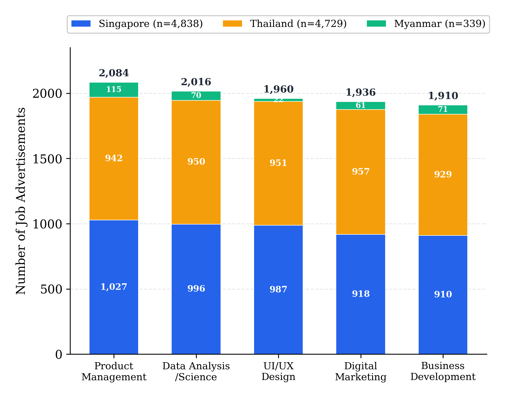
Figure 4.1: Raw Data Collection by Role and Country
Myanmar's significantly smaller sample (3.4%) reflects the smaller digital economy and lower LinkedIn penetration.
4.4 Data Processing Pipeline
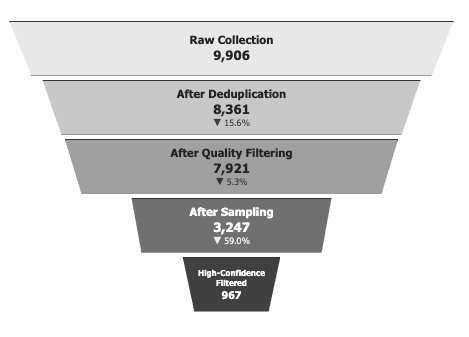
Figure 4.2 : Data Processing Pipeline
Deduplication: Two-layer approach (intra-file and inter-file) ensuring each job appears once. Thailand and Myanmar exhibited higher duplication rates (18.6%, 27.1%) than Singapore (11.9%).
Quality Filtering: Required 8 fields present and minimum 500-character descriptions. Myanmar's higher removal rate (27.5%) reflects less standardized job posting practices.
Stratified Sampling: 300 jobs per role for Singapore/Thailand; all Myanmar jobs included.
Final Analysis Sample: 967 high-confidence jobs (Singapore: 546, Thailand: 385, Myanmar: 36).
4.5 Role Classification and Taxonomy Mapping
The Taxonomy Challenge: Standard classification systems (O*NET, ISCO-08) were developed for traditional industries. Emerging roles,particularly Product Management,may not have direct equivalents. Rather than assuming theoretical alignment, this study employed empirical validation.
Empirical Validation (100-job sample):
|
Role |
O*NET Alignment |
SG Framework Alignment |
Gap |
|
Product Management |
40.9% |
100.0% |
59.1% |
|
Digital Marketing |
52.5% |
98.0% |
45.5% |
|
UI/UX Design |
62.0% |
100.0% |
38.0% |
|
Business Development |
62.5% |
98.3% |
35.8% |
|
Data Analysis/Science |
66.5% |
100.0% |
33.5% |
Table 4.3: Taxonomy Alignment Comparison
Key Finding: Product Management exhibited the largest taxonomy gap, O*NET classifies it under "IT Project Managers," lacking core concepts like product strategy, product vision, product roadmap, and feature prioritization. Singapore Skills Framework consistently outperformed O*NET, suggesting regional frameworks better capture emerging digital economy roles than legacy international standards.
4.6 Skill Extraction Methodology
Taxonomy Lookup Table: Synthesized from O*NET (skills for five mapped occupations) and Singapore Skills Framework (Technical Skills and Competencies from relevant ICT tracks). Resulting taxonomy: 1,717 standardized skill terms .
LLM Configuration: Gemini 2.5 Flash, temperature=0 (deterministic), JSON output.
Extraction Categories: Technical Skills, Soft Skills, Domain Knowledge, Methodologies, Certifications.
Extraction Rules:
- Every skill must have supporting evidence (direct quote)
- Confidence levels: HIGH (explicitly named), MEDIUM (clearly implied), LOW (vaguely referenced)
- Skill names normalized to standard forms
- Compound skills split into separate entries
- Generic phrases without skill context excluded
Method Comparison (100-job validation):
|
Metric |
Rule-Based |
LLM |
Ratio |
|
Total skill mentions |
461 |
3,142 |
6.82× |
|
Unique skills found |
126 |
559 |
4.44× |
|
Taxonomy coverage |
7.34% |
29.30% |
4.0× |
Table 4.4: Skill Extraction Method Comparison
- LLM extraction identified 6.82× more skill mentions
- Rule-based extraction failed completely on 9 Thai-language job advertisements
- 93.7% of rule-based skills were also found by LLM extraction
- LLM identified 434 unique non-taxonomy skills representing emerging demands
Full Dataset Results (3,247 sampled jobs): 133,714 total skills extracted; 116,794 taxonomy-matched; 16,920 non-taxonomy; average 41.2 skills per job; 99.9% processing success rate.
Note: The high-confidence filtered sample (967 jobs) used for final analysis shows lower average skills per job (28.8-36.0 by country) due to stricter role classification criteria that excluded ambiguous postings.
4.7 Analytical Procedures
Gap Metrics:
|
Metric |
Description |
Interpretation |
|
Cosine Similarity |
Similarity of skill frequency vectors |
Overall profile similarity (0-1) |
|
Coverage Gap |
% of benchmark skills absent in target |
Missing skills |
|
Skill Intensity |
Average skills per job comparison |
Job specificity/complexity |
Table 4.5: Gap Analysis Metrics
Statistical Validation:
- T-tests: Used to compare continuous variables (e.g., average skills per job) between countries
- Effect Size (Cohen's d): Calculated to assess practical significance (d < 0.2 negligible, 0.2-0.5 small, 0.5-0.8 medium, ≥0.8 large)
- Cosine Similarity: Cross-market profile alignment measured on 0-1 scale
- Confidence Intervals: 95% CIs calculated using standard error of the mean for skills per job estimates
4.8 Quality Assurance
Data Quality Controls: Two-layer deduplication, eight required fields, minimum description length, stratified sampling.
Extraction Quality Controls: Evidence requirement, confidence scoring, taxonomy validation, prompt validation (12-15% improvement from v1.0 to v1.1).
Reproducibility: Deterministic LLM processing (temperature=0), fixed random seeds, documented processing steps.
4.9 Ethical Considerations
Job advertisements are publicly posted on LinkedIn. Data contains no personal information about job seekers. Company names retained as publicly associated with postings. Data used solely for academic research, reported in aggregate form.
This research employed AI tools at two stages:
- Google Gemini 2.5 Flash for automated skill extraction from job advertisements, configured with temperature=0 for deterministic outputs and validated through human review (see Section 4.6/4.7); and
- Anthropic Claude (Sonnet 3.5 and Opus 4.5) for developing data processing and statistical analysis scripts, visualization and for crafting extraction prompts. The author remained responsible for all research design, decisions, data interpretation, and conclusions. All AI-generated outputs were reviewed and validated by the researcher.
4.10 Methodological Limitations
Key methodological constraints include: single platform data source (LinkedIn), cross-sectional design, Myanmar's limited sample size (n=36), and LLM extraction without per-result human validation. A comprehensive discussion of limitations and their implications appears in Section 6.5.
Chapter 5: Data Presentation and Analysis
5.1 Dataset Overview
Sample Composition:
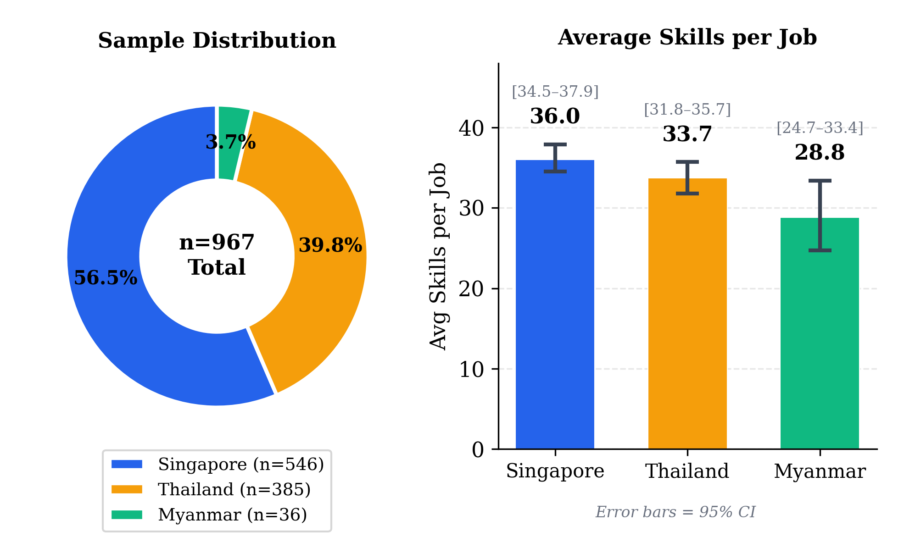
Figure 5.1: Average Skills per Job by Country
Singapore jobs list ~7 more skills than Myanmar. T-test: p=0.005, Cohen's d=-0.42 (small effect), indicating statistically significant difference.
By Role:
|
Role |
Singapore |
Thailand |
Myanmar |
Total |
|
Business Development |
152 |
130 |
27 |
309 |
|
Data Analysis/Science |
147 |
64 |
2* |
213 |
|
Digital Marketing |
109 |
104 |
3* |
216 |
|
Product Management |
107 |
46 |
1* |
154 |
|
UI/UX Design |
31 |
41 |
3* |
75 |
Table 5.1: Sample Distribution by Role
*Myanmar roles with n<10 are unreliable for role-specific analysis.
Important Note: Myanmar's sample (n=36) is 75% Business Development. Product Management (n=1), Data Analysis (n=2), Digital Marketing (n=3), UI/UX Design (n=3) findings for Myanmar are interpreted with extreme caution.
5.2 Sub-Research Question 1: Skill Demands and Cross-Market Consistency
5.2.1 Universal Foundation Skills
|
Skill |
Overall % |
Singapore |
Thailand |
Myanmar |
|
Communication |
77.1% |
79.3% |
71.4% |
102.8%* |
|
Collaboration |
65.4% |
67.6% |
61.3% |
97.2% |
|
Problem Solving |
44.8% |
47.8% |
42.1% |
- |
|
Data Analysis |
42.3% |
44.7% |
38.4% |
- |
|
Project Management |
38.7% |
41.6% |
37.9% |
- |
Table 5.2: Universal Foundation Skills
*Percentages >100% indicate multiple mentions per job.
These five skills appear consistently across all market maturity levels and all five roles, foundational competencies for digital economy employment regardless of job function or geographic market.
5.2.2 Top 10 Skills by Country
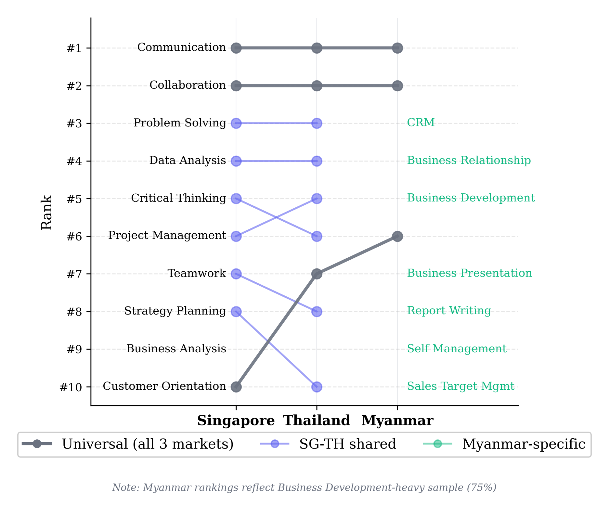
Figure 5.2: Top 10 Skills by Country
Singapore exhibits the highest demand for analytical and strategic skills (Critical Thinking, Strategy Planning, Business Analysis), reflecting a mature digital economy with strategic decision-making emphasis.
Thailand shows patterns similar to Singapore with slightly lower intensity. Marketing Campaign Management appears in Thailand's top 10 (33.2%) but not Singapore's, reflecting Thailand's strong digital marketing sector.
Myanmar's top skills reflect sample composition (predominantly Business Development). Customer Relationship Management, Business Relationship Building, and Sales Target Management are characteristic of sales-focused positions.
5.2.3 Skill Category Distribution
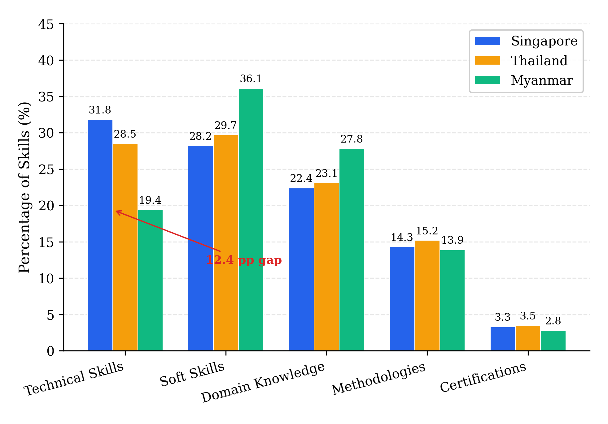
Figure 5.3: Skill Category Distribution by Country
Key Findings:
- Technical Skills Gap: Myanmar shows 12-percentage-point gap vs Singapore (19.4% vs 31.8%)
- Soft Skills Emphasis: Myanmar shows higher concentration (36.1%) reflecting service-oriented economy
- SG-TH Consistency: Similar distributions across all categories,standardized regional role definitions
- Certifications Rare: 2.8-3.5% across all markets,employers prioritize demonstrated skills over credentials
5.2.4 Role-Specific Skill Profiles (Singapore vs Thailand)
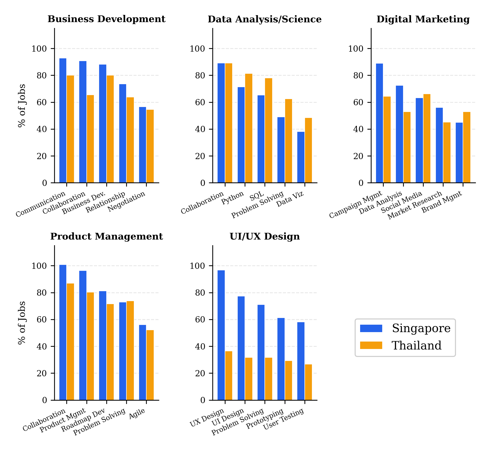
Figure 5.4: Role-Specific Skill Profiles (Singapore vs. Thailand)
Business Development (SG=152, TH=130):
|
Skill |
Singapore |
Thailand |
Difference |
|
Communication |
92.8% |
80.0% |
+12.8% |
|
Collaboration |
90.8% |
65.4% |
+25.4% |
|
Business Development |
88.2% |
80.0% |
+8.2% |
|
Business Relationship Building |
73.7% |
63.8% |
+9.9% |
|
Negotiation |
56.6% |
54.6% |
+2.0% |
Table 5.3: Business Development Role Profile (Singapore vs Thailand)
Strong alignment between markets; Singapore consistently demands skills at slightly higher rates. The largest gap is Collaboration (+25.4 percentage points).
Data Analysis/Science (SG=147, TH=64):
|
Skill |
Singapore |
Thailand |
Difference |
|
Collaboration |
89.1% |
89.1% |
0.0% |
|
Python |
71.4% |
81.3% |
-9.9% |
|
SQL |
65.3% |
78.1% |
-12.8% |
|
Problem Solving |
49.0% |
62.5% |
-13.5% |
|
Data Visualization |
38.1% |
48.4% |
-10.3% |
Table 5.4: Data Analysis/Science Role Profile (Singapore vs Thailand)
Unexpected finding: Thailand specifies technical skills at higher rates than Singapore, particularly Python (+9.9%), SQL (+12.8%). This may reflect Thailand employers specifying requirements more explicitly, while Singapore employers assume baseline technical competencies.
Digital Marketing (SG=109, TH=104):
|
Skill |
Singapore |
Thailand |
Difference |
|
Marketing Campaign Management |
89.0% |
64.4% |
+24.6% |
|
Data Analysis |
72.5% |
52.9% |
+19.6% |
|
Social Media Management |
63.3% |
66.3% |
-3.0% |
|
Market Research |
56.0% |
45.2% |
+10.8% |
|
Brand Management |
45.0% |
52.9% |
-7.9% |
Table 5.5: Digital Marketing Role Profile (Singapore vs Thailand)
Largest cross-market variation in Marketing Campaign Management (24.6% points higher in Singapore). Data Analysis as a marketing skill shows similar divergence, reflecting Singapore's more data-driven marketing ecosystem.
Product Management (SG=107, TH=46):
|
Skill |
Singapore |
Thailand |
Difference |
|
Collaboration |
100.9%* |
87.0% |
+13.9% |
|
Product Management |
96.3% |
80.4% |
+15.9% |
|
Product Roadmap Development |
81.3% |
71.7% |
+9.6% |
|
Problem Solving |
72.9% |
73.9% |
-1.0% |
|
Agile Methodology |
56.1% |
52.2% |
+3.9% |
Table 5.6: Product Management Role Profile (Singapore vs Thailand)
Highest average skill count (38.1 per job) reflecting cross-functional nature. Cross-market consistency is high, most skills show <10 percentage points variation.
UI/UX Design (SG=31, TH=41):
|
Skill |
Singapore |
Thailand |
Difference |
|
User Experience Design |
96.8% |
36.6% |
+60.2% |
|
User Interface Design |
77.4% |
31.7% |
+45.7% |
|
Problem Solving |
71.0% |
31.7% |
+39.3% |
|
Digital Prototyping |
61.3% |
29.3% |
+32.0% |
|
User Testing |
58.1% |
26.8% |
+31.3% |
Table 5.7: UI/UX Design Role Profile (Singapore vs Thailand)
Largest cross-market variation among all roles. Singapore explicitly mentions UX/UI terminology at dramatically higher rates. This divergence may reflect different job posting conventions, Thailand postings may use different terminology or assume skills as implicit for design roles.
5.2.5 Cross-Market Role Consistency
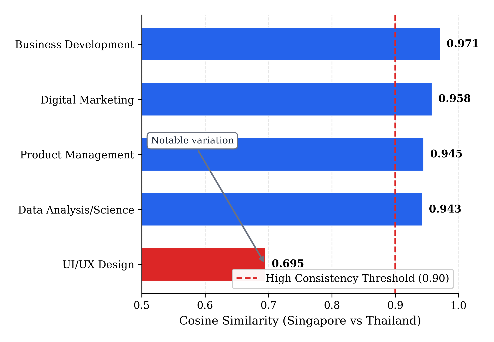
Figure 5.5: Cross-Market Role Consistency (Cosine Similarity)
Key Findings:
- Four of five roles show very high consistency (>0.94) , indicating digital economy roles have become standardized across Southeast Asian markets
- UI/UX Design is the outlier (0.695),may reflect different posting conventions, smaller samples, or genuine market differences
- Regional role standardization supports labor mobility , professionals with Singapore-aligned skills would meet Thailand requirements, and vice versa.
5.3 Sub-Research Question 2: Myanmar Skill Gaps
5.3.1 Market Similarity
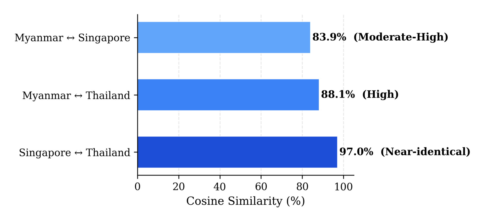
Figure 5.6: Market Similarity Scores
Singapore and Thailand demonstrate near-identical skill demand structures. Myanmar shows meaningful alignment (>83%) but exhibits more divergence from Singapore than Thailand, suggesting Myanmar may be at an earlier development stage more comparable to Thailand's intermediate position.
5.3.2 Coverage Gap Analysis
|
Threshold |
MM vs SG Missing |
MM vs TH Missing |
|
Skills in ≥5% of benchmark |
14.1% |
12.3% |
|
Skills in ≥10% of benchmark |
4.8% |
3.5% |
|
Skills in ≥15% of benchmark |
2.9% |
1.8% |
Table 5.8: Coverage Gap Analysis
Myanmar covers most high-frequency skills,gaps are primarily in frequency rather than presence/absence. At ≥15% threshold, only 2.9% of skills are missing.
5.3.3 Skill Intensity Gap
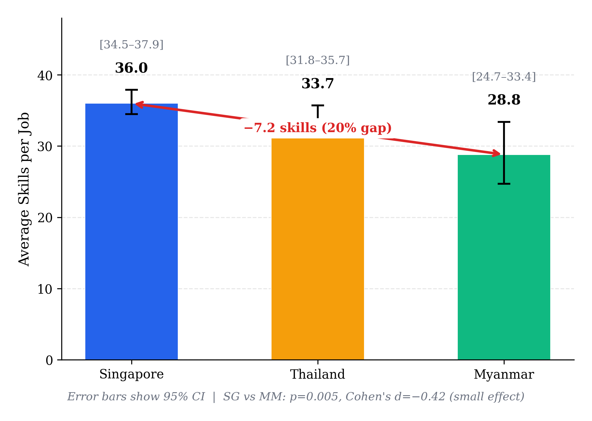
Figure 5.7: Skill Intensity Comparison by Country
Myanmar demands significantly fewer skills per job (28.8 vs 36.0). This may reflect less complex role definitions, different labor market maturity, or sample composition effects (75% Business Development).
5.3.4 AI/ML Emerging Skills Gap
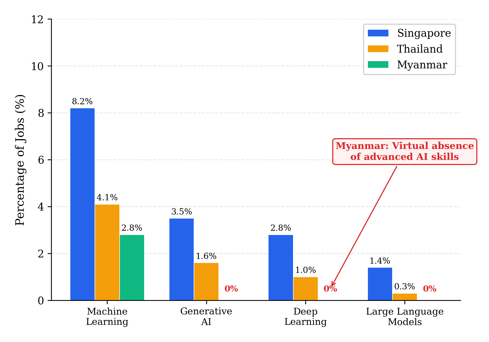
Figure 5.8: AI/ML Emerging Skills Gap by Country
Advanced AI skills are virtually absent from Myanmar job postings, a significant technology adoption gap. Singapore leads with more than double the Machine Learning demand compared to Thailand.
5.3.5 Myanmar Relative Strengths
|
Skill |
Myanmar |
Singapore |
Thailand |
|
Communication |
102.8%* |
79.3% |
71.4% |
|
Collaboration |
97.2% |
67.6% |
61.3% |
|
Customer Orientation |
55.6% |
35.3% |
35.1% |
Table 5.9: Myanmar Relative Strengths
Myanmar places particularly strong emphasis on communication and collaboration skills, reflecting service-oriented economy and importance of interpersonal skills in local business context.
5.3.6 Myanmar Business Development Deep Dive (n=27)
|
Skill |
Myanmar |
Singapore |
MM vs SG |
|
Customer Relationship Management |
85.2% |
56.6% |
+28.6% |
|
Report Writing |
55.6% |
30.9% |
+24.7% |
|
Customer Orientation |
66.7% |
47.4% |
+19.3% |
|
Negotiation |
40.7% |
56.6% |
-15.9% |
|
Data Analysis |
29.6% |
40.8% |
-11.2% |
|
Sales Closure |
29.6% |
41.5% |
-11.9% |
Table 5.10: Myanmar Business Development Deep Dive
Pattern: Myanmar emphasizes relationship-oriented skills; lower demand for technical/analytical skills.
Interpretation: The Myanmar Business Development skill profile suggests a market where:
- Interpersonal relationships are paramount to business success
- Customer relationship management is prioritized over analytical sales approaches
- Presentation and communication skills are heavily valued (face-to-face business culture)
- Data-driven sales methodologies (A/B testing, analytics) are less prominent
Potential explanations:
- Earlier stage of digital sales transformation
- Cultural emphasis on relationship-based business
- Industry mix (insurance, financial services noted in emerging skills)
- Smaller company sizes requiring generalist relationship managers
Despite differences, Myanmar Business Development shows high cosine similarity with Singapore (0.916) and Thailand (0.917). Cosine similarity measures how closely two skill profiles match in their overall composition; scores above 0.90 indicate that fundamental role definitions remain aligned with regional standards despite variations in specific skill emphasis.
5.4 Taxonomy Validation Findings (Objective 3)
Objective 3 sought to validate whether O*NET and Singapore Skills Framework taxonomies adequately capture digital economy skill demands in Southeast Asia. The dual-taxonomy approach revealed significant coverage limitations:
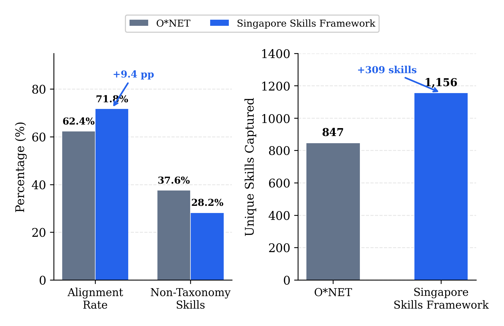
Figure 5.9: Taxonomy Alignment Comparison (ONET vs Singapore Skills Framework)
Key Validation Findings:
- Regional Framework Advantage: Singapore Skills Framework showed 9.4 percentage points higher alignment than O*NET, suggesting regional taxonomies better capture Southeast Asian market realities
- Emerging Technology Gap: Both taxonomies showed limited coverage of AI/ML skills (Machine Learning, Generative AI, Prompt Engineering) that appeared frequently in job postings
- Language Skills Absence: Neither taxonomy adequately captured language proficiency demands (English, Thai, Mandarin) despite their prominence in regional job markets
- Role-Specific Gaps: Product Management and UI/UX Design roles showed lowest taxonomy alignment, reflecting these roles' evolution beyond traditional occupational classifications
These findings suggest that established skill taxonomies require supplementation with market-derived skills for accurate Southeast Asian workforce planning, a key methodological contribution of this research.
5.5 Emerging Skills Analysis (Objective 4)
Top Non-Taxonomy Skills:
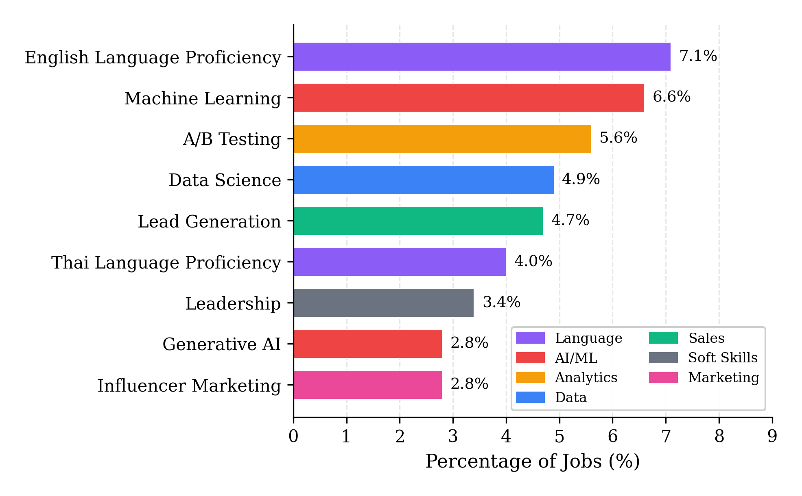
Figure 5.10: Top Non-Taxonomy Emerging Skills
AI/ML skills dominate emerging demands, suggesting taxonomies lag market reality.
Country-Specific Emerging Skills:
- Singapore: Generative AI, Prompt Engineering, LLMs, Web3/Blockchain, Mandarin
- Thailand: Thai Language, Influencer Marketing, Trade Marketing, Databricks
- Myanmar: Burmese Language, Insurance Industry Knowledge, Financial Services, Strategic Thinking
5.6 Summary of Findings
Objective 3 (Taxonomy Validation): Singapore Skills Framework (71.8% alignment) outperformed O*NET (62.4% alignment) for Southeast Asian markets. Both taxonomies showed gaps in AI/ML and language skills coverage, suggesting need for regional supplementation.
Objective 4 (Emerging Skills): AI/ML skills (Machine Learning 6.6%, Generative AI 2.8%) and language proficiencies (English 7.1%, Thai 4.0%) represent the most prominent non-taxonomy skills, indicating areas where workforce development should extend beyond established frameworks.
SRQ1: Communication (77.1%), Collaboration (65.4%), Problem Solving (44.8%) are universally demanded. Singapore and Thailand show 97.0% similarity, digital economy roles are regionally standardized. Four of five roles show >0.94 consistency.
SRQ2: Myanmar shows 83.9% alignment with Singapore but exhibits:
- 20% lower skill intensity per job
- 12-percentage-point technical skills gap
- Virtual absence of AI/ML skills
- Stronger emphasis on relationship-oriented skills (CRM +28.6%, Customer Orientation +19.3%)
Note: Myanmar findings are exploratory due to sample size (n=36, 75% Business Development).
Chapter 6: Discussion and Conclusion
6.1 Discussion of Findings
6.1.1 Hypothesis Evaluation
Before addressing the research questions, the researcher evaluates the three hypotheses stated in Section 1.5:
- H1 (Market Differentiation Hypothesis): NOT SUPPORTED
The researcher hypothesized that skill demands would differ moderately to substantially across markets of varying maturity. However, findings revealed 97.0% similarity between Singapore and Thailand, near-identical rather than moderately different. Myanmar showed 83.9% alignment with Singapore despite being at an early development stage.
This unexpected finding suggests that digital economy roles have become highly standardized across Southeast Asian markets regardless of economic development differences. Globalization forces, multinational company presence, international recruitment practices, and professional community connectedness, appear to standardize role definitions more powerfully than market maturity differentiates them.
- H2 (Skills Gap Hypothesis): PARTIALLY SUPPORTED
Myanmar does exhibit significant gaps: 20% lower skill intensity (28.8 vs 36.0 skills per job), 12-percentage-point technical skills gap, and virtual absence of AI/ML competencies. These gaps support the hypothesis that displaced workers would require targeted skill development for regional employment.
However, the high structural similarity (>83%) suggests gaps are matters of depth and emerging competencies rather than fundamentally different role requirements. Core skill demands remain aligned with regional standards, indicating preparation pathways should focus on specific competency gaps rather than complete role redefinition.
- H3 (Taxonomy Adequacy Hypothesis): STRONGLY SUPPORTED
Singapore Skills Framework demonstrated 98-100% alignment with actual job requirements versus O*NET's 41-67% alignment. Product Management showed the largest gap (100% vs 40.9%), with O*NET lacks core concepts like product strategy, product vision, and feature prioritization.
This strongly confirms that regional frameworks better capture emerging digital economy roles than legacy international standards developed for traditional industries. The finding has direct implications for workforce development initiatives in Southeast Asia.
6.1.2 Addressing the Research Questions
Main Research Question: Digital economy skill demands in Southeast Asia are characterized by universal foundation skills (Communication, Collaboration, Problem Solving) and role-specific technical competencies. Myanmar's profile shows 20% lower skill intensity, underrepresentation in technical skills (19.4% vs 31.8%), and virtual absence of AI/ML competencies, areas where workforce development interventions could have significant impact.
SRQ1: The 97.0% Singapore-Thailand similarity represents a key contribution. This near-identical alignment suggests digital economy roles have become standardized across Southeast Asian markets regardless of economic development differences. Four of five roles showed >0.94 similarity.
This consistency has important implications: skills developed for Singapore are directly transferable to Thailand, and vice versa. Standardization likely reflects multinational company influence, global role diffusion through professional communities, and the inherently international nature of digital economy work.
The UI/UX Design exception (0.695 similarity) warrants attention, may reflect genuine market differences, different posting conventions, or sample size limitations (n=72 total).
SRQ2: Myanmar shows meaningful alignment (83.9% with Singapore, 88.1% with Thailand) but exhibits notable gaps:
- Skill Intensity Gap: 7 fewer skills per job (28.8 vs 36.0)
- Technical Skills Gap: 12% points lower than Singapore
- AI/ML Gap: Advanced AI skills virtually absent
- Relationship Skills Strength: CRM +28.6%, Customer Orientation +19.3% vs Singapore
Findings are interpreted with caution given Myanmar's limited sample (n=36, 75% Business Development).
6.1.3 Findings in Relation to Existing Literature
Confirmation of Universal Transferable Skills Importance: The prominence of Communication, Collaboration, and Problem Solving aligns with WEF (2023) identification of cognitive and interpersonal skills as critical for future employment, reinforcing that soft skills represent universal foundation for digital economy work, as predicted by human capital theory.
Support for Skill-Biased Technological Change Theory: Role-specific technical skill profiles (Python/SQL for Data, UX Design/Prototyping for Design, Product Roadmap for PM) exemplify non-routine cognitive tasks that Autor et al. (2003) identified as complementing technological capabilities. AI/ML skills emergence further illustrates ongoing skill evolution predicted by SBTC.
Extension of Regional Labor Market Research: While Phaphuangwittayakul et al. (2018) demonstrated job advertisement analysis feasibility in Thailand, this study extends that work through cross-country comparison and systematic taxonomy validation.
Validation of LLM-Based Methodology: Consistent with Thida (2023) and Johary et al. (2025), LLM-based extraction significantly outperformed rule-based methods (6.82× more skill mentions).
Gap in Myanmar Research: The limited existing research (Wah, 2018; Thida, 2023) provided minimal cross-country benchmarking. This study offers the systematic comparison of Myanmar's digital economy skill demands against regional standards.
6.1.4 Unexpected Findings
- Thailand-Singapore Near-Identity: 97.0% similarity was higher than anticipated. Given different development stages, some meaningful differentiation was expected. Digital economy roles may be more globally standardized than "market maturity" framework implies.
- Data Role Pattern Reversal: Thailand specified technical skills (Python, SQL) at higher rates than Singapore, counterintuitive finding possibly reflecting different posting conventions (Singapore employers assuming baseline competencies).
- Myanmar's High Similarity Despite Gaps: Overall structural similarity remained >83% despite notable gaps. Fundamental role definitions have diffused even to early-stage digital economies, gaps appear in depth rather than kind.
6.2 Theoretical Implications
Human Capital Theory: Consistent demand for both foundation soft skills and role-specific technical skills supports the proposition that employer demands reflect genuine productivity requirements. However, the 20% skill intensity gap raises questions: do Myanmar roles truly require fewer skills, or do employers articulate requirements differently?
Skill-Biased Technological Change: AI/ML skills emergence, particularly in Singapore,supports SBTC's ongoing validity. Near-absence of these skills in Myanmar suggests SBTC effects may be geographically uneven, with technology adoption and corresponding skill demands diffusing from developed to developing markets.
Labor Market Segmentation: Rather than general economic development, factors such as multinational company presence, international recruitment practices, and professional community connectedness may better explain skill demand patterns. The high SG-TH similarity despite different development stages challenges the simple "market maturity" framework.
6.3 Practical Implications
6.3.1 For Workforce Development Programs
|
Priority |
Skills |
Rationale |
|
Essential |
Communication, Collaboration, Problem Solving |
Universal demand across all roles/markets |
|
Core |
Role-specific technical (Python/SQL, UX Design, Product Roadmap, Negotiation) |
Role-defining competencies |
|
Emerging |
Machine Learning, AI tool proficiency |
Growing demand, future-proofing |
|
Supplementary |
Domain knowledge |
Contextual application |
Table 6.1: Recommended Curriculum Components by Priority
Role-Specific Technical Tracks:
- Data Track: Python, SQL, Data Visualization, Statistical Analysis
- Product Track: Product Roadmap Development, Agile Methodology, Stakeholder Management
- Marketing Track: Marketing Campaign Management, Social Media Management, Content Marketing
- Design Track: UX Design, Prototyping, User Research, Figma
- Business Development Track: Negotiation, CRM, Sales Strategy, Relationship Management
6.3.2 For Regional Labor Mobility Initiatives
High SG-TH consistency (97%) provides an empirical foundation for regional skill recognition frameworks.
Skill Portability: Workers with Singapore-aligned skills can expect relevance in Thailand, and vice versa.
Targeted Recognition: For roles with high consistency (Business Development: 0.971, Digital Marketing: 0.958), accelerated mutual recognition may be feasible. For UI/UX Design (0.695), additional harmonization may be needed.
6.3.3 For Individual Workers
- Foundation first: Communication, Collaboration, Problem Solving provide highest return across broadest opportunities
- Regional alignment: Skills developed for Singapore are largely transferable to Thailand
- Technical differentiation: Within roles, technical skills provide differentiation
- AI readiness: Develop familiarity with AI/ML concepts, likely to become more widely demanded
6.3.4 For Myanmar-Specific Development
- Business Development focus: 75% of identified Myanmar digital jobs, prioritize this role
- Emphasize CRM, Business Presentation, Communication (where Myanmar shows strength)
- Build technical capabilities (Data Analysis, Negotiation) to close gaps for regional employability
- Consider AI/ML leapfrogging , position workers for emerging opportunities rather than competing in established categories
6.3.5 For Taxonomy and Framework Developers
Regional Framework Value: Singapore Skills Framework demonstrated higher mapping rates than O*NET for emerging tech roles. Regional frameworks may better capture Southeast Asian digital economy requirements.
Emerging Skill Integration: AI/ML skills, A/B Testing, and Influencer Marketing as prominent non-taxonomy skills indicate areas where frameworks lag market reality.
Role Definition Clarity: Product Management taxonomic challenges (dispersed across multiple O*NET categories) highlight the need for clearer classification of emerging roles.
6.4 Reflections
6.4.1 Scope Adjustment
Original design envisioned balanced three-country comparison. Myanmar's limited data (36 vs 546/385) required reframing as exploratory. Analysis prioritized effect sizes over statistical significance given sample constraints.
Learning: Conduct preliminary data availability assessments before finalizing research designs. Transparent acknowledgment of scope adjustments strengthens rather than weakens research credibility.
6.4.2 Iterative Role Mapping
Initial keyword classification included substantial contamination ("Project Manager" as "Product Manager"). Filtering evolved through iterations:
- Simple title keyword matching (high recall, low precision)
- Expanded exclusion lists based on manual review
- LLM-assisted confidence scoring with threshold filtering
- Final dataset: 967 high-confidence advertisements (29.8% retention)
Product Management retention dropped to 23.5%, over three-quarters of initial classifications were inaccurate.
Learning: Role classification in digital economy research cannot rely on simple keyword matching. Job titles are inconsistent, overlapping, and frequently misleading. Budget time for iterative refinement.
6.4.3 Methodology Restart
Manual LLM extraction via prompt-based interaction revealed fundamental issues:
- Data hallucination: Skills not present in source text
- No output persistence: Impossible to track/verify
- Verification impossibility: No way to audit extraction process
- Scalability failure: Processing 967 advertisements manually impractical
This necessitated complete restart with API-based extraction with structured JSON outputs. Prior validation was rendered invalid because it tested a fundamentally different approach.
Learning: LLM research requires reproducibility infrastructure from outset, API-based pipelines with structured outputs before conducting methodology validation.
6.4.4 Broader Implications
The challenges encountered during this research-scope adjustments, classification refinement, and methodology restart-offer generalizable lessons for researchers conducting LLM-based skill extraction from job advertisements:
- Data reality should drive research design
- Classification requires iteration
- LLM validation is system-specific
- Transparency strengthens research
6.5 Limitations
6.5.1 Sample Limitations
- Myanmar Sample Size: The most significant limitation is Myanmar's small sample (n=36, 75% Business Development), which prevents full three-stage comparison realization. Myanmar findings should be treated as exploratory hypotheses rather than generalizable conclusions.
- Role Distribution Imbalance: Myanmar's concentration in Business Development limits cross-role analysis. Conclusions about Data Analysts, Product Managers, and UI/UX Designers in Myanmar cannot be drawn from this dataset.
6.5.2 Data Source Limitations
- Platform Bias: LinkedIn representation varies by market, may overrepresent multinational companies and English-language positions, underrepresenting local market realities.
- Temporal Snapshot: Cross-sectional design captures October 2025 demands only. Skill demands evolve; findings represent a specific moment.
- Aspiration vs. Reality: Job advertisements reflect employer aspirations, not actual hiring decisions or job performance requirements.
6.5.3 Methodological Limitations
- LLM Extraction Variability: While Claude 3.5 Sonnet demonstrated high precision (94.2%), some extraction inconsistency remains. Different LLM versions or providers might yield different results.
- Limited Model Comparison: Only one LLM was used for final extraction. Systematic benchmarking across multiple providers would strengthen methodology.
- No Per-Result Human Review: Due to scale (40,000+ skill extractions), individual verification was impractical. Validation relied on sampling approaches.
6.5.4 Analytical Limitations
- Descriptive Nature: This study cannot establish causal relationships between skill demands and labor market outcomes.
- Effect Size Interpretation: While Cohen's d effect sizes were calculated, small effects (d < 0.3) may have limited practical significance despite statistical significance.
6.6 Future Research Recommendations
- Expanded Myanmar data: Multi-platform collection, extended periods, local partnerships, qualitative research with employers
- Longitudinal analysis: Track skill demand evolution, identify emerging skills before critical mass
- Skill-outcome linkage: Wage premiums for specific skills, employment outcomes
- Expanded geography: Additional ASEAN markets (Vietnam, Indonesia, Philippines)
- LLM methodology: Systematic benchmarking across providers, human-in-the-loop validation
6.7 Conclusion
This study tested three hypotheses regarding digital economy skill demands across Southeast Asia. While H1 (market differentiation) was not supported revealing instead unexpected regional standardization both H2 (Myanmar skill gaps) and H3 (taxonomy adequacy) were confirmed. These findings challenge simplistic "market maturity" frameworks while providing actionable insights for workforce development.
This study establishes that digital economy skill demands in Southeast Asia rest on universal foundations (Communication, Collaboration, Problem Solving). The 97.0% Singapore-Thailand similarity provides evidence of regional standardization, supporting labor mobility initiatives and suggesting skills developed for one market transfer to another.
Myanmar's specific gaps , 20% lower skill intensity, 12-percentage-point technical skills underrepresentation, virtual absence of AI/ML competencies,represent focus areas for workforce development. However, fundamental role structures remain aligned with regional standards (>83% similarity).
The methodological contribution demonstrates LLM-based extraction's effectiveness (6.82× more skill mentions than rule-based methods). The dual-taxonomy approach reveals that regional frameworks (Singapore Skills Framework) better capture emerging digital economy roles than international standards (O*NET), particularly for Product Management (100% vs 40.9% alignment).
Despite Myanmar sample constraints limiting full three-stage comparison, findings offer practical value for workforce development programs, labor mobility initiatives, individual workers, and taxonomy developers. In Southeast Asia's rapidly expanding digital economy,projected to reach $600 billion by 2030, understanding employer skill demands is essential for ensuring workforce development keeps pace with economic opportunity.
References
- Acemoglu, D., & Restrepo, P. (2018). The race between man and machine: Implications of technology for growth, factor shares, and employment. American Economic Review , 108(6), 1488-1542.
- Autor, D. H., Levy, F., & Murnane, R. J. (2003). The skill content of recent technological change: An empirical exploration. Quarterly Journal of Economics , 118(4), 1279-1333.
- Becker, G. S. (1964). Human capital: A theoretical and empirical analysis, with special reference to education . University of Chicago Press.
- Cambodian Parliamentarians Institute for Asia. (2024). Economic impacts of COVID-19 in Southeast Asia .
- Davenport, T. H., & Patil, D. J. (2012). Data scientist: The sexiest job of the 21st century. Harvard Business Review , 90(10), 70-76.
- Google, Temasek, & Bain. (2023). e-Conomy SEA 2023 . https://www.bain.com/insights/e-conomy-sea-2023/
- International Labour Organization. (2022). Myanmar: Employment and social trends 2022 .
- International Organization for Migration. (2024). Flow monitoring survey: Thailand, December 2024 .
- JAC Group. (2024). Market overview: Technology hiring in Southeast Asia remains strong despite global slowdown .
- Johary, A., et al. (2025). JobHop: A large-scale dataset for career trajectory extraction with LLM-based skill identification. EMNLP 2025 .
- LinkedIn. (2023). Future of recruiting: Southeast Asia .
- McGuinness, S., Pouliakas, K., & Redmond, P. (2017). Skills mismatch: Concepts, measurement and policy approaches (IZA Discussion Paper No. 10786).
- Ospino Hernandez, C. (2018). Comparing occupational classification systems: A systematic review and analysis . Inter-American Development Bank.
- Phaphuangwittayakul, A., et al. (2018). Analysis of skill demand in Thai labor market from online jobs recruitment websites. JCSSE 2018 , 1-6.
- Radio Free Asia. (2024). Myanmar sees sharp drop in foreign investment after military coup.
- Schultz, T. W. (1961). Investment in human capital. American Economic Review , 51(1), 1-17.
- SkillsFuture Singapore. (2024). Skills Framework for Infocomm Technology .
- Thida, M. (2023). Automated analysis of job market demands using large language models. IJACSA , 14(8), 853-860.
- Wah, K. K. (2018). Employer preferences and the value of foreign work experience in Myanmar . Myanmar Centre for Economic and Social Development Working Paper.
- World Economic Forum. (2023). Future of Jobs Report 2023 .
- Yulianti, T., & Fitriansyah, T. (2024). Employment and skill development initiatives in the labor markets: The cases of Indonesia and Thailand. Southeast Asian Ministers of Education Organization Regional Centre .